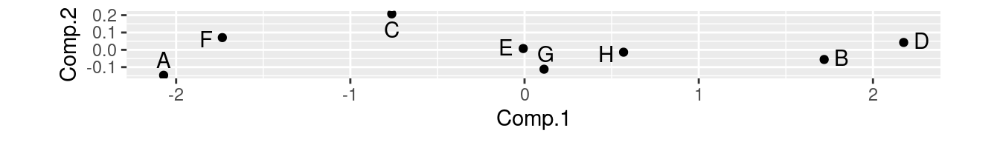

Warning: `read_table2()` was deprecated in readr 2.0.0.
ℹ Please use `read_table()` instead.
test12
# A tibble: 8 × 3
first second id
<dbl> <dbl> <chr>
1 2 9 A
2 16 40 B
3 8 17 C
4 18 43 D
5 10 25 E
6 4 10 F
7 10 27 G
8 12 30 H
g <-ggplot(test12, aes(x = first, y = second, label = id)) +geom_point() +geom_text_repel()
The plot
g +geom_smooth(method ="lm", se = F)
`geom_smooth()` using formula = 'y ~ x'
Warning: The following aesthetics were dropped during statistical transformation: label
ℹ This can happen when ggplot fails to infer the correct grouping structure in
the data.
ℹ Did you forget to specify a `group` aesthetic or to convert a numerical
variable into a factor?
Importance of components:
Comp.1 Comp.2
Standard deviation 1.410347 0.104508582
Proportion of Variance 0.994539 0.005461022
Cumulative Proportion 0.994539 1.000000000
Comments
“Standard deviation” shows relative importance of components (as for LDs in discriminant analysis)
Here, first one explains almost all (99.4%) of variability.
That is, look only at first component and ignore second.
cor=TRUE standardizes all variables first. Usually wanted, because variables measured on different scales. (Only omit if variables measured on same scale and expect similar variability.)
Scree plot
ggscreeplot(test12.pc)
Imagine scree plot continues at zero, so 2 components is a big elbow (take one component).
Component loadings
explain how each principal component depends on (standardized) original variables (test scores):
test12.pc$loadings
Loadings:
Comp.1 Comp.2
first 0.707 0.707
second 0.707 -0.707
Comp.1 Comp.2
SS loadings 1.0 1.0
Proportion Var 0.5 0.5
Cumulative Var 0.5 1.0
First component basically sum of (standardized) test scores. That is, person tends to score similarly on two tests, and a composite score would summarize performance.
Component scores
d <-data.frame(test12, test12.pc$scores)d
first second id Comp.1 Comp.2
1 2 9 A -2.071819003 -0.146981782
2 16 40 B 1.719862811 -0.055762223
3 8 17 C -0.762289708 0.207589512
4 18 43 D 2.176267535 0.042533250
5 10 25 E -0.007460609 0.007460609
6 4 10 F -1.734784030 0.070683441
7 10 27 G 0.111909141 -0.111909141
8 12 30 H 0.568313864 -0.013613668
Person A is a low scorer, very negative comp.1 score.
Person D is high scorer, high positive comp.1 score.
ggplot(d, aes(x = Comp.1, y = Comp.2, label = id)) +geom_point() +geom_text_repel() +coord_fixed() -> g
Shows how exam scores really spread out along one dimension:
g

The biplot
Plotting variables and individuals on one plot.
Shows how components and original variables related.
Shows how individuals score on each component, and therefore suggests how they score on each variable.
Add labels option to identify individuals:
g <-ggbiplot(test12.pc, labels = test12$id)
The biplot
Comments
Variables point almost same direction (right). Thus very positive value on comp.1 goes with high scores on both tests, and test scores highly correlated.
Position of individuals on plot according to scores on principal components, implies values on original variables. Eg.:
D very positive on comp.1, high scorer on both tests.
A and F very negative on comp.1, poor scorers on both tests.
C positive on comp.2, high score on first test relative to second.
A negative on comp.2, high score on second test relative to first.
Places rated
Every year, a new edition of the Places Rated Almanac is produced. This rates a large number (in our data 329) of American cities on a number of different criteria, to help people find the ideal place for them to live (based on what are important criteria for them).
Look at component loadings and make a call about “large” (in absolute value) vs “small”. Large loadings are a part of the component and small ones are not. Thus, if we use 0.4 as cutoff:
component #1 depends on health and arts
#2 depends on economy and crime, and negatively on education.
#3 depends on climate, and negatively on economy.
#4 depends on education and the economy, negatively on transportation and recreation opportunities.
#5 depends on crime and negatively on housing.
Comments
The use of 0.4 is arbitrary; you can use whatever you like. It can be difficult to decide whether a variable is “in” or “out”.
The large (far from zero) loadings indicate what distinguishes the cities as places to live, for example:
places that are rated high for health also tend to be rated high for arts
places that have a good economy tend to have a bad climate (and vice versa)
places that have a lot of crime tend to have bad housing.
Making a plot 1/3
How can we make a visual showing the cities? We need a “score” for each city on each component, and we need to identify the cities (we have a numerical id in the original dataset):
The as_tibble is needed at the end because the scores are a matrix.
Making a plot 2/3
Plot the first two scores against each other, labelling each point by the id of the city it belongs to:
ggplot(places_score, aes(x = Comp.1, y = Comp.2, label = city_id)) +geom_text() -> g
Making a plot 3/3
g
Comments
Cities 213 and 270 are high on component 1, and city 116 is low. City 195 is high on component 2, and city 322 is low.
This suggests that cities 213 and 270 are high on health and arts, and city 116 is low. City 195 should be high on economy and crime and low on education, and city 322 should be the other way around.
Checking this 1/2
The obvious way of checking this is in two steps: first, work out what high or low means for each variable:
summary(places)
climate housing health crime
Min. :4.654 Min. : 8.548 Min. :3.761 Min. :5.730
1st Qu.:6.174 1st Qu.: 8.819 1st Qu.:6.368 1st Qu.:6.561
Median :6.295 Median : 8.972 Median :6.725 Median :6.853
Mean :6.260 Mean : 8.997 Mean :6.805 Mean :6.796
3rd Qu.:6.384 3rd Qu.: 9.107 3rd Qu.:7.276 3rd Qu.:7.053
Max. :6.813 Max. :10.071 Max. :8.968 Max. :7.823
trans educate arts recreate
Min. :7.043 Min. :7.439 Min. : 3.951 Min. :5.704
1st Qu.:8.052 1st Qu.:7.871 1st Qu.: 6.657 1st Qu.:7.182
Median :8.314 Median :7.935 Median : 7.534 Median :7.421
Mean :8.283 Mean :7.936 Mean : 7.383 Mean :7.429
3rd Qu.:8.557 3rd Qu.:8.010 3rd Qu.: 8.254 3rd Qu.:7.685
Max. :9.062 Max. :8.238 Max. :10.946 Max. :8.476
econ id
Min. :8.021 Min. : 1
1st Qu.:8.485 1st Qu.: 83
Median :8.591 Median :165
Mean :8.598 Mean :165
3rd Qu.:8.718 3rd Qu.:247
Max. :9.208 Max. :329
Checking this 2/2
and then find the values on the variables of interest for our cities of interest, and see where they sit on here.
Cities 270, 213, and 116 were extreme on component 1, which depended mainly on health and arts:
City 195 is the highest on economy, just above Q3 on crime, and below Q1 on education. City 322 should be the other way around: nearly the lowest on economy, below Q1 on crime, and between the median and Q3 on education. This is as we’d expect.
A better way: percentile ranks
It is a lot of work to find the value of each city on each variable in the data summary.
A better way is to work out the percentile ranks of each city on each variable and then look at those:
City 322 was really low on economy and crime, but only just above average on education. City 195 was the highest on economy and really low on education, but only somewhat high on crime (76th percentile).
This, as you see, is much easier once you have set it up.
The biplot
ggbiplot(places.1, labels = places$id)
Comments
This is hard to read!
There are a lot of cities that overshadow the red arrows for the variables.
Comments
“Standard deviation” shows relative importance of components (as for LDs in discriminant analysis)
Here, first one explains almost all (99.4%) of variability.
That is, look only at first component and ignore second.
cor=TRUEstandardizes all variables first. Usually wanted, because variables measured on different scales. (Only omit if variables measured on same scale and expect similar variability.)